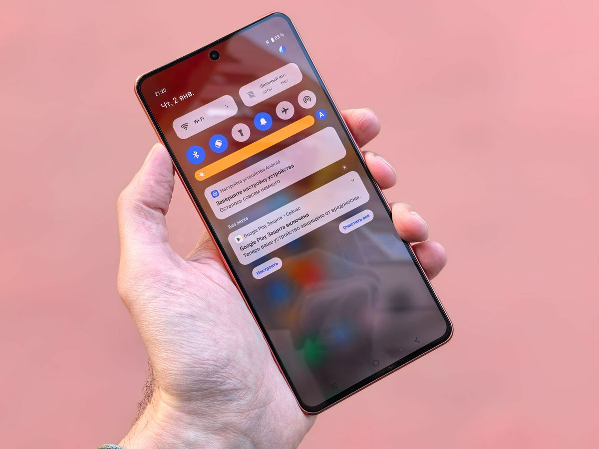

HP hilang itu bikin panik. Di kepala langsung antre semua yang ada di dalamnya: foto, chat kerja, mobile banking, semua akun yang sudah login. Tapi jangan langsung panik. HP Android punya fitur gratis dari Google yang dulu bernama Find My Device dan sekarang disebut Find Hub. Penyebutan nama barunya bisa kamu cek di halaman bantuan resmi Google yang memakai istilah Hub Pencari untuk layanan yang sama. Fitur ini bisa menunjukkan lokasi HP-mu di peta, membunyikannya dari jauh, sampai menguncinya supaya datamu aman dari orang lain.
Panduan ini berlaku per Oktober 2026. Layanannya gratis dan aktif otomatis pada HP Android yang terhubung ke akun Google, menurut halaman bantuan resmi Google.
Aktifkan Dulu, Sekarang Juga, Sebelum HP Hilang
Ini bagian paling penting dari artikel ini, dan ironisnya bagian yang paling sering dilewati orang. Find Hub hanya bisa dipakai kalau persiapannya sudah aktif sebelum HP hilang. Sesudah hilang baru mau mengaktifkan, sudah terlambat.
Empat syarat yang harus aktif sekarang:
- HP sudah masuk ke akun Google. Hampir semua HP Android otomatis masuk akun Google sejak pertama kali dipakai, tapi pastikan kamu masih ingat alamat email dan kata sandinya. Tanpa itu kamu tidak bisa login ke situs pelacakan dari perangkat lain.
- Fitur Find Hub aktif. Caranya: buka Setelan, pilih menu Google, gulir ke Semua layanan, ketuk Temukan Perangkat Saya, lalu pastikan sakelarnya menyala.
- Fitur lokasi (GPS) aktif. Tanpa ini sistem tidak bisa merekam posisi HP.
- HP terlihat di Google Play. Perangkat yang disembunyikan dari Google Play tidak muncul di daftar pelacakan.
Butuh waktu dua menit untuk memeriksa semuanya. Kerjakan sekarang, bukan nanti.

Cara Melacak HP dari Browser atau HP Lain
HP sudah hilang. Ini langkahnya.
- Pinjam laptop, PC, atau HP orang lain. Buka browser lalu kunjungi android.com/find. Ini situs resmi Google untuk pelacakan perangkat.
- Login dengan akun Google yang sama seperti di HP yang hilang, pakai akun utama kalau HP punya beberapa profil pengguna.
- Pilih HP yang hilang dari daftar perangkat yang muncul.
- Peta akan menampilkan lokasi HP. Kalau HP masih online, lokasinya real-time. Kalau sudah offline, yang tampil adalah lokasi terakhir sebelum sinyal hilang. Di panel samping kamu juga bisa melihat waktu terakhir HP terdeteksi, sisa baterai, dan jaringan Wi-Fi yang sedang terhubung.
Alternatifnya, unduh aplikasi Find Hub dari Play Store di HP Android lain. Aplikasi ini juga punya mode login sebagai tamu, jadi kamu bisa membantu teman yang HP-nya hilang tanpa harus logout dari akunmu sendiri.
Satu hal yang perlu kamu tahu: HP yang berhasil dilacak akan menerima notifikasi bahwa pelacakan sedang digunakan. Jadi jangan kaget kalau HP-nya ternyata ada di rumah dan notifikasinya muncul di sana.
Tiga Tombol Darurat yang Bisa Kamu Tekan
Begitu lokasi HP terlihat, kamu punya tiga pilihan tindakan. Pilih sesuai situasi.
Putar Suara. HP akan berdering dengan volume maksimum selama 5 menit, dan tetap berbunyi walau sedang dalam mode senyap atau getar, menurut halaman bantuan resmi Google. Ini tombol pertama yang harus dicoba kalau lokasinya menunjukkan HP masih di dekatmu, misalnya di rumah atau kantor. Seringnya HP cuma nyelip di antara bantal sofa.
Tandai Hilang. Pilihan ini mengunci HP dari jauh dengan PIN, pola, atau kata sandi, dan bisa menampilkan pesan di layar kunci, misalnya "HP ini hilang, tolong hubungi saya di nomor ..." lengkap dengan nomor telepon yang bisa dihubungi. Cocok dipakai kalau HP hilang di tempat umum dan kamu berharap ada orang baik yang menemukannya. (Sumber: bantuan Google)
Reset ke Setelan Pabrik. Ini pilihan terakhir. Semua data di HP dihapus dari jauh seperti reset pabrik, cocok kalau HP jelas dicuri dan isi datanya lebih penting daripada perangkatnya sendiri. Tapi ingat konsekuensinya: sesudah data dihapus, HP tidak lagi tersedia di Find Hub sehingga tidak bisa dilacak lagi. (Sumber: bantuan Google)
Kalau HP Tidak Ketemu, Lindungi Akunmu Dulu
Pelacakan tidak selalu berakhir bahagia. Kalau HP tetap tidak ditemukan, fokusmu pindah dari mencari perangkat ke melindungi akun.
Hubungi operator seluler untuk memblokir kartu SIM, supaya nomor telepon tidak dipakai orang lain untuk menerima kode verifikasi. Ganti kata sandi akun Google dan akun penting lain seperti mobile banking dan e-commerce dari perangkat lain, supaya sesi login di HP yang hilang ikut terputus. Kalau jelas dicuri, jangan coba mengambilnya sendiri. Catat nomor IMEI yang ada di boks HP atau struk pembelian, lalu buat laporan ke polisi.
Pelacakan memang tidak menjamin HP kembali. Tapi selisih antara "punya peluang" dan "tidak punya peluang sama sekali" ditentukan oleh dua menit persiapan yang kamu lakukan hari ini. Aktifkan Find Hub sekarang, catat kata sandi akun Google-mu, dan semoga kamu tidak pernah benar-benar butuh artikel ini.
Sumber dan Info Resmi
Angka dan detail fitur di artikel ini merujuk ke sumber berikut, yang sudah diverifikasi isinya:
- Bantuan Google: Menemukan, mengamankan, atau menghapus data perangkat Android yang hilang (halaman resmi, Bahasa Indonesia): Putar Suara berbunyi dengan volume maksimum selama 5 menit meski mode senyap, layanan disebut Hub Pencari (nama Inggrisnya Find Hub), dan aplikasi Hub Pencari aktif otomatis begitu akun Google ditambahkan ke perangkat.
- android.com/find: situs resmi Google untuk menemukan, mengunci, atau menghapus HP Android yang hilang (disebut Find Hub).